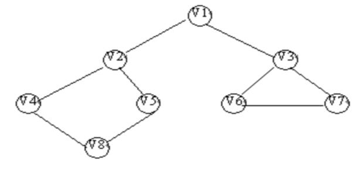

|
|
第七章 图
§7.3 图的遍历
图的遍历是指从图中的任一顶点出发，对图中的所有顶点访问一次且只访问一次。图的遍历操作和树的遍历操作功能相似。图的遍历是图的一种基本操作，图的许多其它操作都是建立在遍历操作的基础之上。 v由于图结构本身的复杂性，所以图的遍历操作也较复杂，主要表现在以下四个方面：
① 在图结构中，没有一个“自然”的首结点，图中任意一个顶点都可作为第一个被访问的结点。
② 在非连通图中，从一个顶点出发，只能够访问它所在的连通分量上的所有顶点，因此，还需考虑如何选取下一个出发点以访问图中其余的连通分量。
③ 在图结构中，如果有回路存在，那么一个顶点被访问之后，有可能沿回路又回到该顶点。
④ 在图结构中，一个顶点可以和其它多个顶点相连，当这样的顶点访问过后，存在如何选取下一个要访问的顶点的问题。
图的遍历通常有深度优先搜索和广度优先搜索两种方式，下面分别介绍。
深度优先搜索（Depth_Fisrst Search）遍历类似于树的先根遍历，是树的先根遍历的推广。
假设初始状态是图中所有顶点未曾被访问，则深度优先搜索可从图中某个顶点发v出发，访问此顶点，然后依次从v的未被访问的邻接点出发深度优先遍历图，直至图中所有和v有路径相通的顶点都被访问到；若此时图中尚有顶点未被访问，则另选图中一个未曾被访问的顶点作起始点，重复上述过程，直至图中所有顶点都被访问到为止。
以图8.17的无向图G5为例，进行图的深度优先搜索。假设从顶点v1出发进行搜索，在访问了顶点v1之后，选择邻接点v2。因为v2未曾访问，则从v2出发进行搜索。依次类推，接着从v4 、v8 、v5 出发进行搜索。在访问了v5之后，由于v5的邻接点都已被访问，则搜索回到 v8。由于同样的理由，搜索继续回到v4，v2直至v1，此时由于v1的另一个邻接点未被访问，则搜索又从v1到v3，再继续进行下去由此，得到的顶点访问序列为：
v1 →v2 →v4→v8→ v5 →v3→v6→v7

以图7.17的无向图G5为例，进行图的深度优先搜索。假设从顶点v1出发进行搜索，在访问了顶点v1之后，选择邻接点v2。因为v2未曾访问，则从v2出发进行搜索。依次类推，接着从v4 、v8 、v5 出发进行搜索。在访问了v5之后，由于v5的邻接点都已被访问，则搜索回到 v8。由于同样的理由，搜索继续回到v4，v2直至v1，此时由于v1的另一个邻接点未被访问，则搜索又从v1到v3，再继续进行下去由此，得到的顶点访问序列为：
v1 →v2 →v4→v8→ v5 →v3→v6→v7
显然，这是一个递归的过程。为了在遍历过程中便于区分顶点是否已被访问，需附设访问标志数组visited[0:n-1], ，其初值为FALSE ，一旦某个顶点被访问，则其相应的分量置为TRUE。
从图的某一点v出发，递归地进行深度优先遍历的过程如算法7.4所示。
void DFS(Graph G,int v )
{ /*从第v个顶点出发递归地深度优先遍历图G*/
visited[v]=TRUE;VisitFunc(v); /*访问第v个顶点*/
for(w=FisrAdjVex(G,v);w; w=NextAdjVex(G,v,w))
if (!visited[w]) DFS(G,w); /*对v的尚未访问的邻接顶点w递归调用DFS*/
}
当以邻接表作存储结构时，深度优先搜索遍历图的时间复杂度为O（n+e）。
广度优先搜索
广度优先搜索（Breadth_First Search） 遍历类似于树的按层次遍历的过程。
其基本思想是：假设从图中某顶点v出发，在访问了v之后依次访问v的各个未曾访问过的邻接点，然后分别从这些邻接点出发依次访问它们的邻接点，并使“先被访问的顶点的邻接点”先于“后被访问的顶点的邻接点”被访问，直至图中所有已被访问的顶点的邻接点都被访问到。若此时图中尚有顶点未被访问，则另选图中一个未曾被访问的顶点作起始点，重复上述过程，直至图中所有顶点都被访问到为止。换句话说，广度优先搜索遍历图的过程中以v为起始点，由近至远，依次访问和v有路径相通且路径长度为1,2,…的顶点。
▲：例如，对图7.17 所示无向图G5 进行广度优先搜索遍历，首先访问v1 和v1的邻接点v2和v3，然后依次访问v2 的邻接点v4 和v5 及v3 的邻接点v6和v7，最后访问v4 的邻接点v8。由于这些顶点的邻接点均已被访问，并且图中所有顶点都被访问，由些完成了图的遍历。得到的顶点访问序列为：
v1→v2 →v3 →v4→ v5→ v6→ v7 →v8
和深度优先搜索类似，在遍历的过程中也需要一个访问标志数组。并且，为了顺次访问路径长度为2、3、…的顶点，需附设队列以存储已被访问的路径长度为1、2、… 的顶点。
从图的某一点v出发，递归地进行广度优先遍历的过程如算法7.7所示。
void BFSTraverse(Graph G, Status(*Visit)(int v))
{/*按广度优先非递归遍历图G。使用辅助队列Q和访问标志数组visited*/
for (v=0;v<G,vexnum;++v)
visited[v]=FALSE
InitQueue(Q); /*置空的国债队列Q*/
if (!visited[v]) /*v尚未访问*/
{EnQucue(Q,v); /*v入队列*/
while (!QueueEmpty(Q))
{ DeQueue(Q,u); /*队头元素出队并置为u*/
visited[u]=TRUE; visit(u); /*访问u*/
for(w=FistAdjVex(G,u); w; w=NextAdjVex(G,u,w))
if (!visited[w]) EnQueue(Q,w); /*u的尚未访问的邻接顶点w入队列Q*/
} }
}/*BFSTraverse*/
|
|